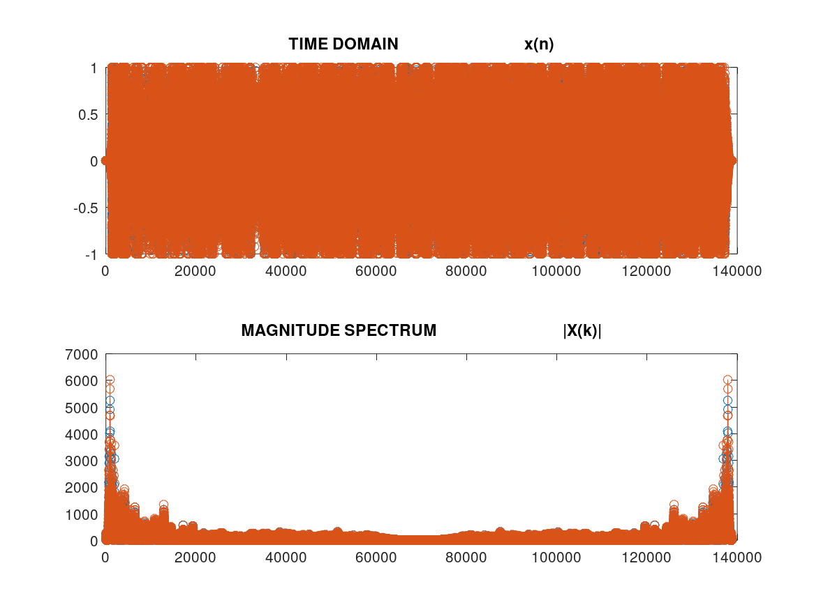

%DFT PROGRAM clc,clear,clf %x = [5 0 9 10 11 7 5 6 19 10 11 7 5 6 9 10 11 7 9 17 9 10 11 7 5 6 10 10 11 9 5 6 9 10 11 7 ]; [x, Fs] = audioread('song8k.wav'); N = length(x); %for n= 0:1:N-1 % for k= 0:1:N-1 % W(n+1,k+1 )=exp(-j*2*pi*n*k/N); % endfor % endfor % W X=fft(x); subplot(2,1,1), stem(x), title('TIME DOMAIN x(n)') subplot(2,1,2), stem(abs(X)), title('MAGNITUDE SPECTRUM |X(k)|')